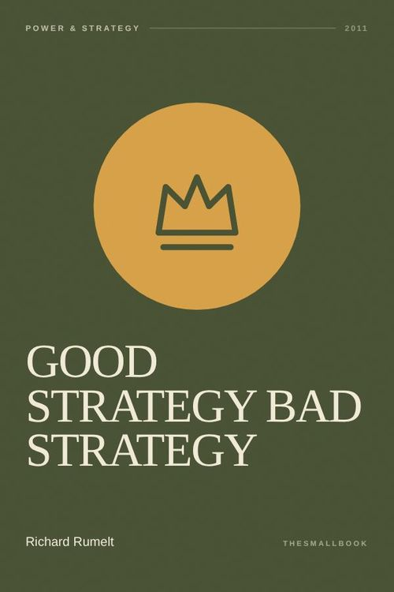

Library › Authors › Richard Rumelt
Books by Richard Rumelt
Richard Rumelt has one book in the library. Every book here is read down to the big idea, the lessons, the lines worth keeping and the actions worth taking. Start with the summary, then buy the full book if it earns a place on your shelf.

Good Strategy Bad Strategy
2011 · 8 min · 6 lessons
Real strategy is a diagnosis, a guiding policy and coherent action. Everything else is a vision statement.
Richard Rumelt - called 'the man who made strategy interesting' by McKinsey - analyzed thousands of real strategies and found most are empty: goals, budgets and vision statements dressed up as strategy. Real strategy has a structure he calls the kernel: a diagnosis of the true nature of the challenge, a guiding policy for dealing with it, and coherent actions that follow. Strategy is about focus, leverage and hard choices - not slogans.
Lessons in the summary
- The Kernel: Diagnosis → Policy → Action
- Bad Strategy Is Fluff
- Find the Crux
- Use Leverage
- Think in Chains
- Strategy Is Diagnosis, Policy, and Action - Not Goals
Lines worth keeping
- Strategy is the craft of figuring out which purposes are worth pursuing and what is required to achieve them.
- Good strategy works by focusing energy and resources on one, or a very few, pivotal objectives.
- Fluff is a form of restatement of the obvious combined with a sprinkling of buzzwords.
Questions Richard Rumelt helps answer
Read nearby authors next
- Amish Tripathi 6 books
- Robert Greene 6 books
- Devdutt Pattanaik 5 books
- Nassim Nicholas Taleb 4 books
- Radhakrishnan Pillai 3 books
- Sanjeev Sanyal 3 books
- Simon Sinek 3 books
- Al Ries & Jack Trout 2 books
Questions Richard Rumelt helps answer
Where should I start with Richard Rumelt? Start with Good Strategy Bad Strategy: Real strategy is a diagnosis, a guiding policy and coherent action. Everything else is a vision statement.